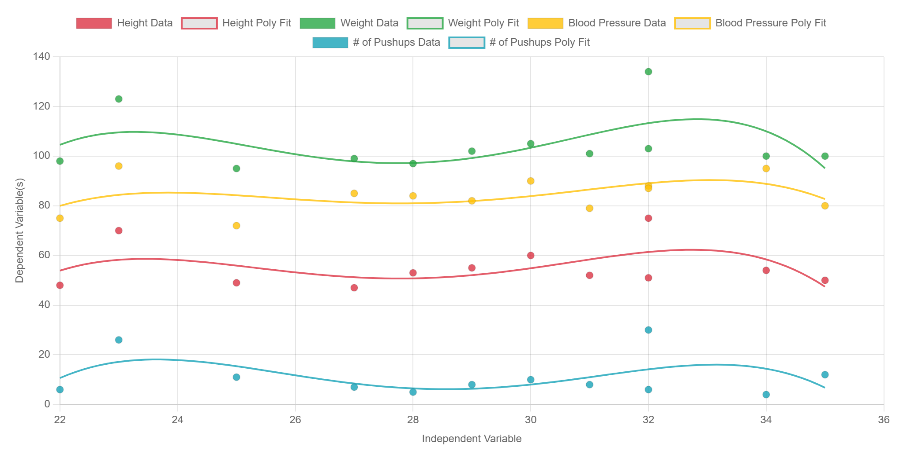
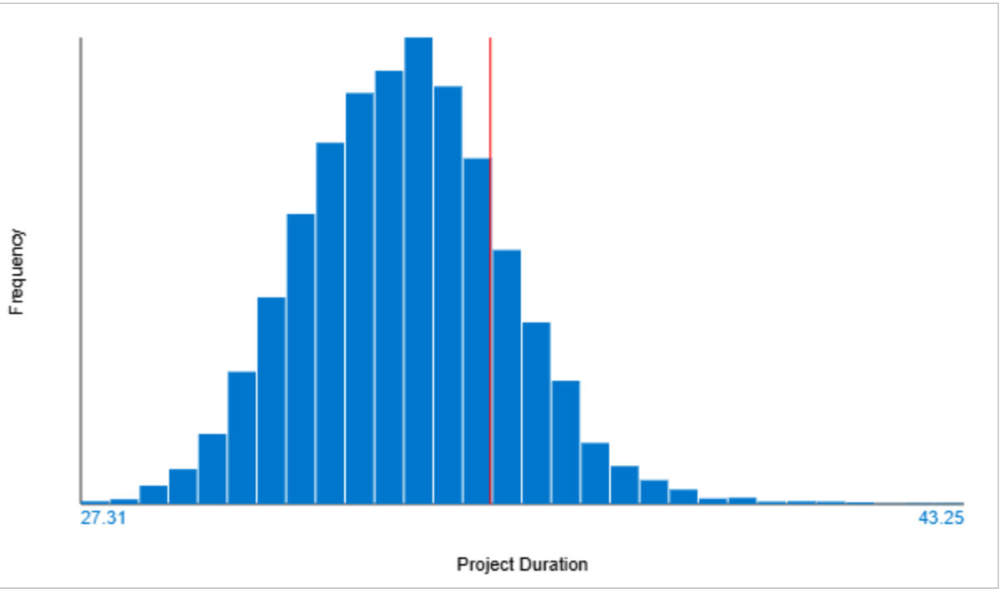
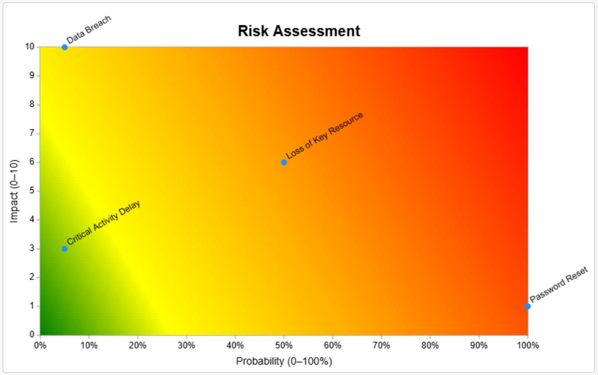

Simple Regression & Distribution
Analyze data distribution and predict using simple linear and polynomial regression models.
Open Tool

Advanced Scheduling
Uses output from Advanced Network Diagram to simulate complex interdependencies using Monte Carlo.
Open Tool

Risk Register & Assessment
Identify, prioritize, and manage project risks efficiently.
Open Tool